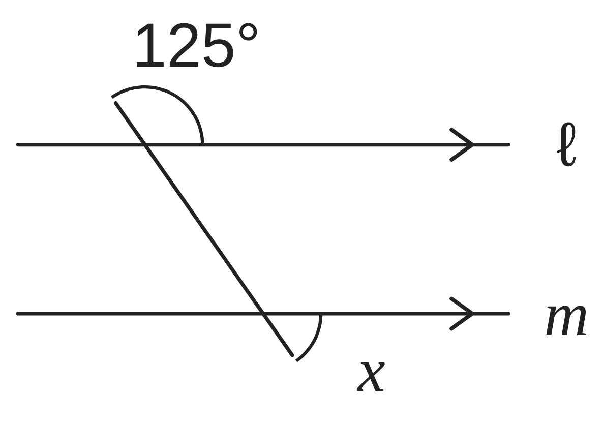
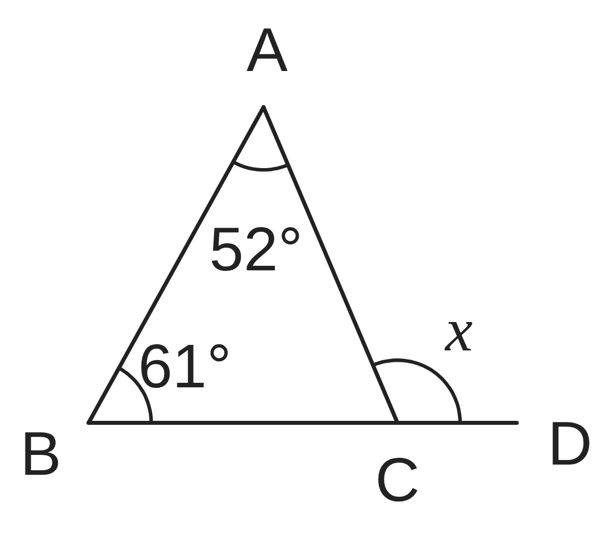
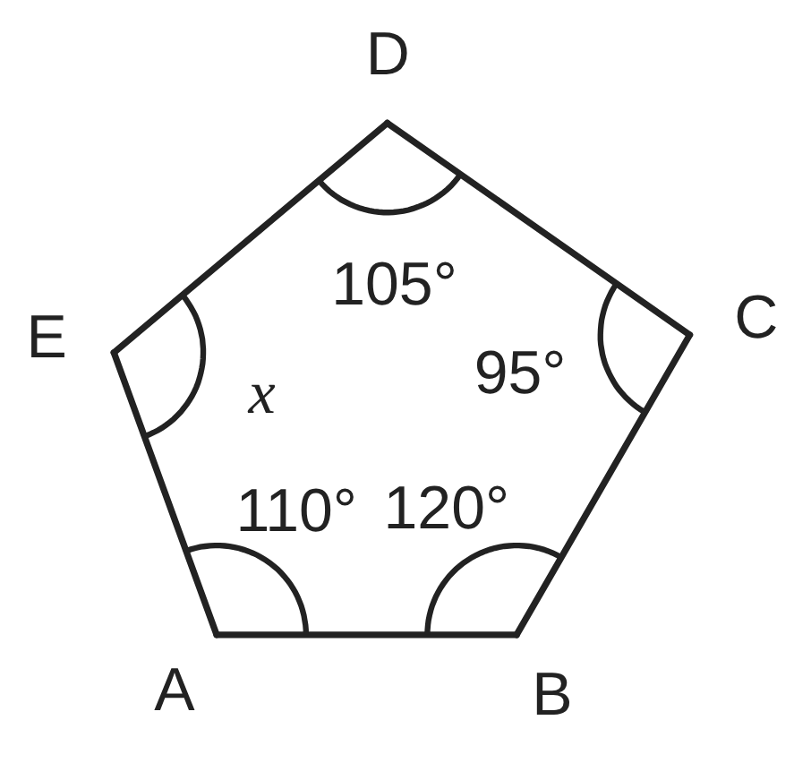
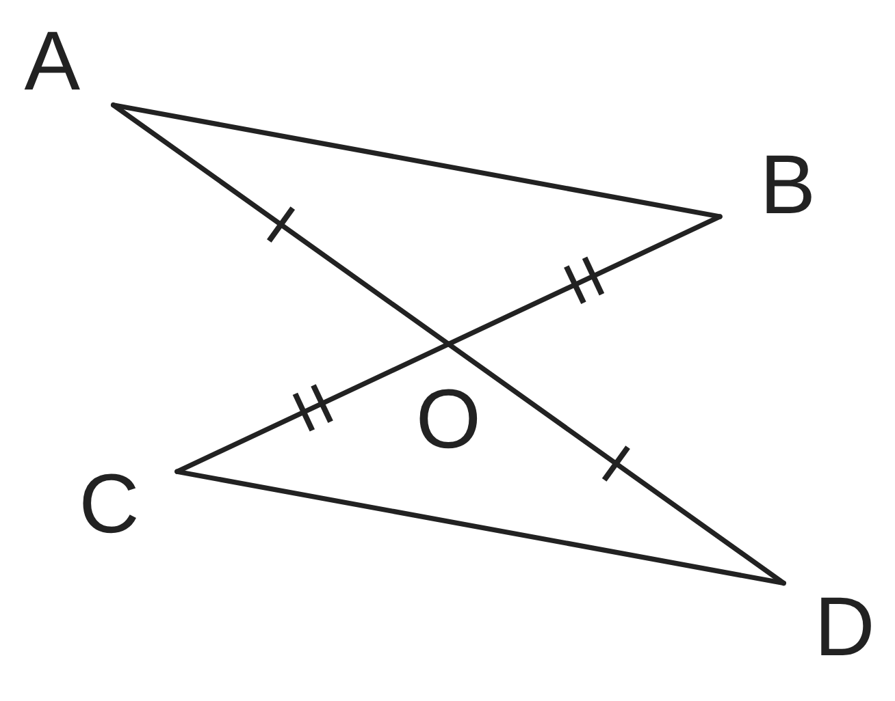
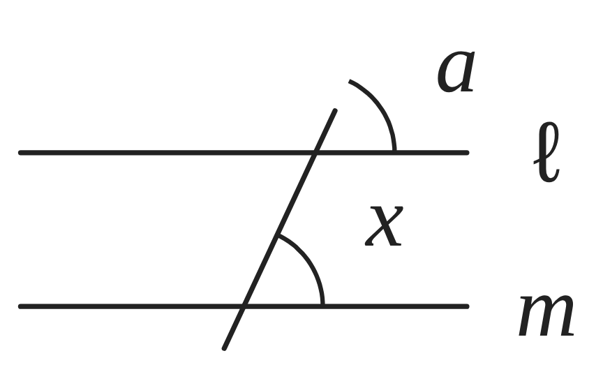
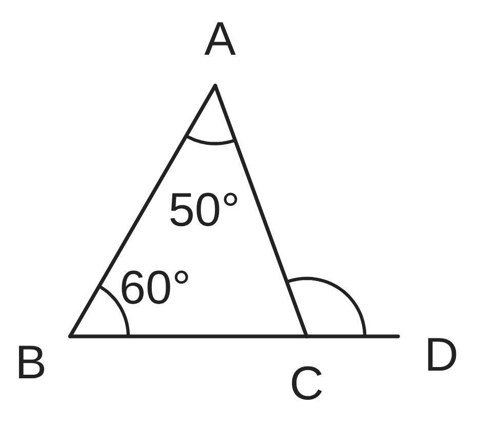

ペア学習
第14時 「平行と合同」で学んだことを、整理して確かめよう
前の時間の重要語句を、ペアで出し合おう
第13時の重要語句から、1人1問ずつ、言葉を選んで出題する。
聞かれた人は、その言葉の意味を、自分の言葉で言う。
共通
合同条件
対応する
平行と合同 第14時 「平行と合同」で学んだことを、整理して確かめよう
めあて
第14時 「平行と合同」で学んだことを、整理して確かめよう
「平行と合同」で学んだことを、整理して確かめよう
学習課題
下の図で、∠x の大きさを求めよう。
また、使った性質も答えよう。（①は ℓ∥m である。）
①

②

③

平行と合同 第14時 「平行と合同」で学んだことを、整理して確かめよう
学習課題のまとめ
第14時 「平行と合同」で学んだことを、整理して確かめよう
図で、∠x の大きさを求めよう。また、使った性質も答えよう。
①

一直線の角は 180° だから
180°−125°＝55°
平行線の同位角は
等しいから x＝55°
②

外角の性質より
x＝52°+61°＝113°
③

五角形の内角の和は
180°×(5−2)＝540°
x＝540°−(110°+120°+95°+105°)
＝110°
平行と合同 第14時 「平行と合同」で学んだことを、整理して確かめよう
ことば
第14時 「平行と合同」で学んだことを、整理して確かめよう
向かい合う角を という。
2直線が平行ならば、 も も等しい。
三角形の内角の和は 。
n角形の内角の和は 、外角の和は 。
合同な図形では、 辺や角は等しい。
三角形の は 3つ。
仮定から結論まで、 をあげて筋道を立てて
説明することを という。
平行と合同 第14時 「平行と合同」で学んだことを、整理して確かめよう
ことば
第14時 「平行と合同」で学んだことを、整理して確かめよう
向かい合う角を対頂角という。
2直線が平行ならば、同位角も錯角も等しい。
三角形の内角の和は180°。
n角形の内角の和は180°×(n−2)、外角の和は360°。
合同な図形では、対応する辺や角は等しい。
三角形の合同条件は 3つ。
仮定から結論まで、根拠をあげて筋道を立てて
説明することを証明という。
平行と合同 第14時 「平行と合同」で学んだことを、整理して確かめよう
例題
第14時 「平行と合同」で学んだことを、整理して確かめよう
右の図で、線分 AD と BC が
点 O で交わっている。
仮定 … AO＝ 、BO＝
結論 … AB∥
このことを証明しよう。
【目をつける三角形】

平行と合同 第14時 「平行と合同」で学んだことを、整理して確かめよう
例題 解答
第14時 「平行と合同」で学んだことを、整理して確かめよう
仮定 … AO＝DO、BO＝CO 結論 … AB∥DC
【目をつける三角形】△AOB と △DOC
△AOB と △DOC において
仮定より AO＝DO …①
仮定より BO＝CO …②
対頂角は等しいから ∠AOB＝∠DOC …③
①、②、③より、2組の辺とその間の角が、
それぞれ等しいから △AOB≡△DOC
合同な図形の、対応する角は等しいから
∠OAB＝∠ODC
錯角が等しいから AB∥DC

平行と合同 第14時 「平行と合同」で学んだことを、整理して確かめよう
考えよう
第14時 「平行と合同」で学んだことを、整理して確かめよう
ア〜エは、この単元の問題についての、ある生徒の考えや答えである。
「正しい」か「正しくない」かを選び、わけを説明しよう。正しくないものは、直そう。
ア
右の図で、∠a＝65° である。ℓ と m は平行に見えるから、
同位角は等しい。だから、∠x＝65° である。
イ
正八角形の 1つの外角の大きさを、
180°×(8−2)÷8＝135° と求めた。
ウ
△ABC で、∠A＝50°、∠B＝60° である。辺 BC を C のほうへ
のばした直線上に点 D をとると、
∠ACD＝50°+60°＝110° である。
エ
△ABC≡△DEF のとき、辺 AC に対応する辺は、辺 DE である。
ア

ウ

①
ア〜エを読んで、まちがえないために大切なことを、まとめよう。
②
角度をはかって確かめることと、証明することは、どこがちがうだろう。
平行と合同 第14時 「平行と合同」で学んだことを、整理して確かめよう
振り返り
第14時 「平行と合同」で学んだことを、整理して確かめよう
今日のめあて
「平行と合同」で学んだことを、整理して確かめよう
対頂角
同位角・錯角
内角・外角
合同条件
仮定・結論
証明
今日わかったことを、ペアで1つずつ言い合おう。
ワークシートと演習プリントを出そう。（未完成でも出す）
平行と合同 第14時 「平行と合同」で学んだことを、整理して確かめよう